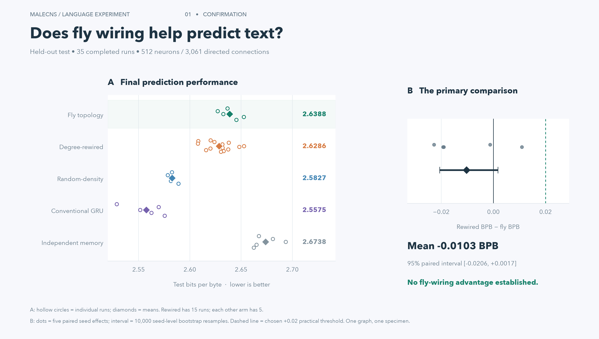
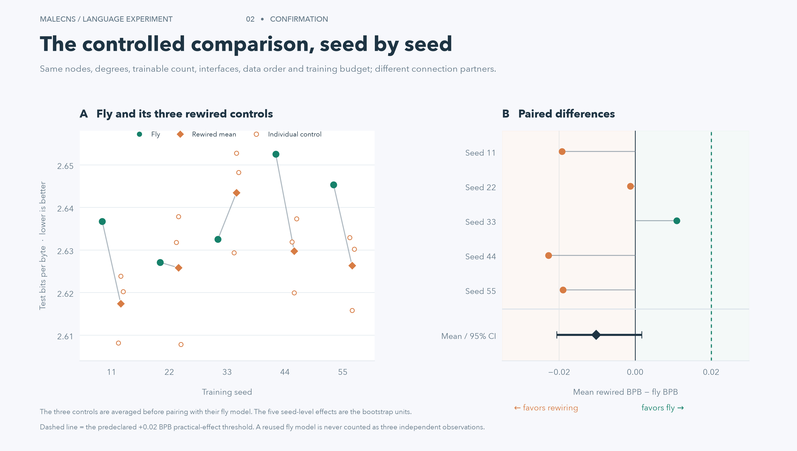
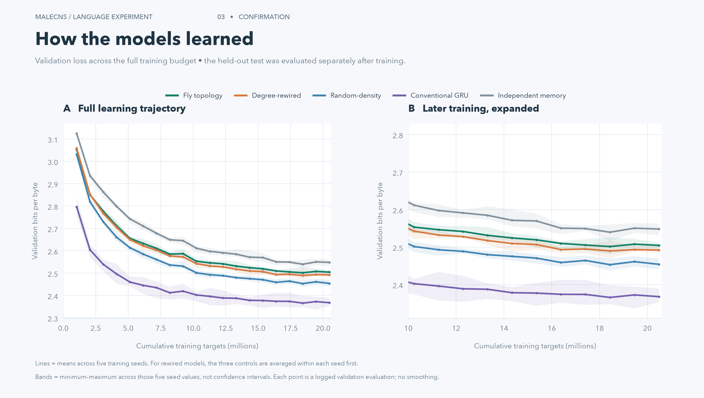
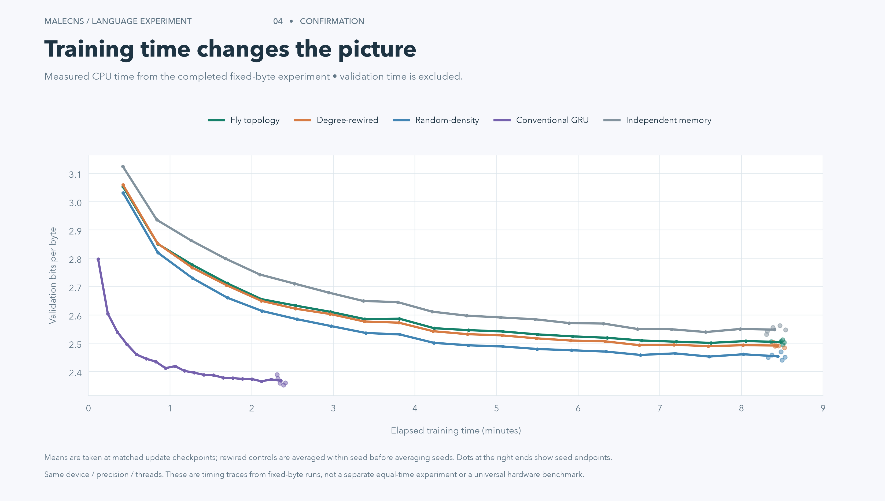
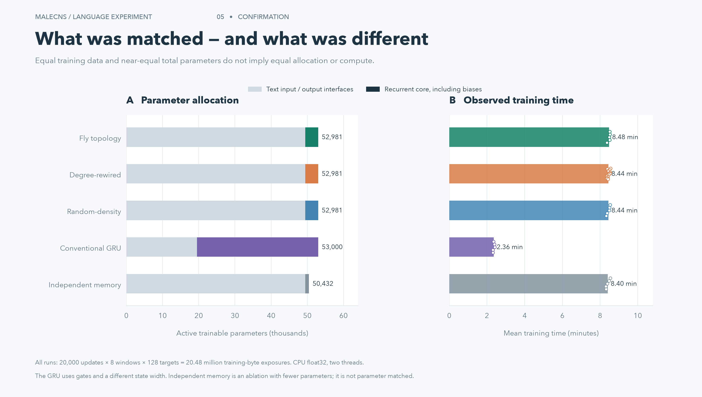
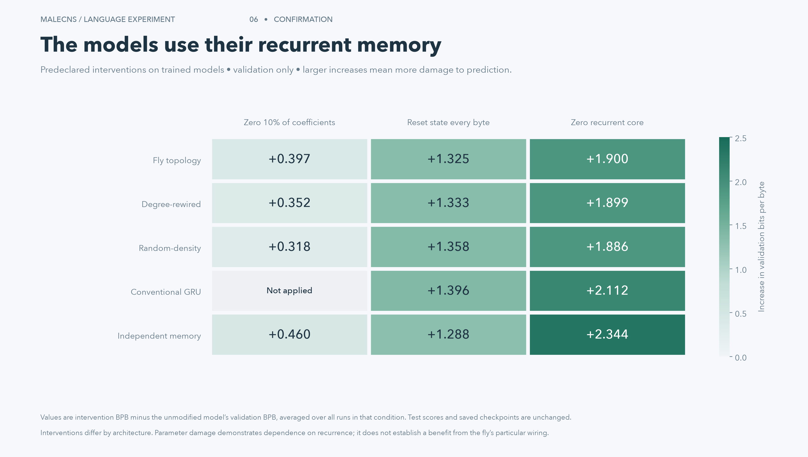
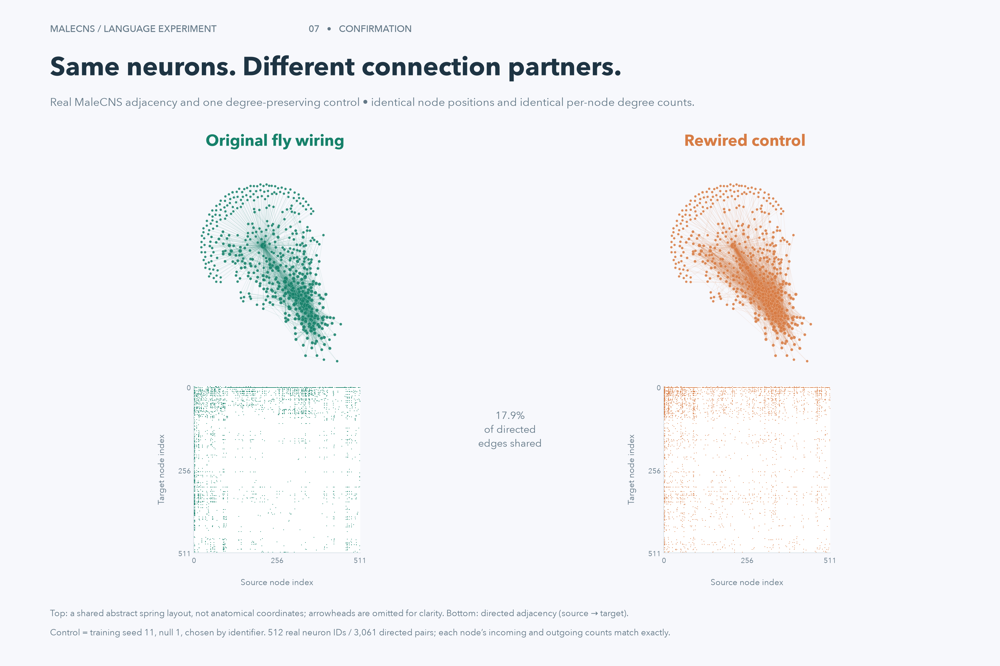

Final test performance and the predeclared paired effect. The interval crosses zero; five seeds offer limited uncertainty.PNGSVGPDF
All five matched comparisons and all 15 rewired test scores, with the primary seed-level bootstrap interval.PNGSVGPDF
Validation curves versus training-byte exposures. Shaded ranges show seed variability, with a separate late-training view.PNGSVGPDF
Measured validation trajectories against CPU training time. This is not the separately planned fixed-time protocol.PNGSVGPDF
Complete active parameter accounting and observed training time, with all individual run timings visible.PNGSVGPDF
Validation-only changes after disrupting recurrence. Positive values show worse prediction; they do not establish a special fly-wiring benefit.PNGSVGPDF
Actual 512-node fly and rewired graphs, a common abstract layout, and directed adjacency matrices. Layout is not anatomy.PNGSVGPDF